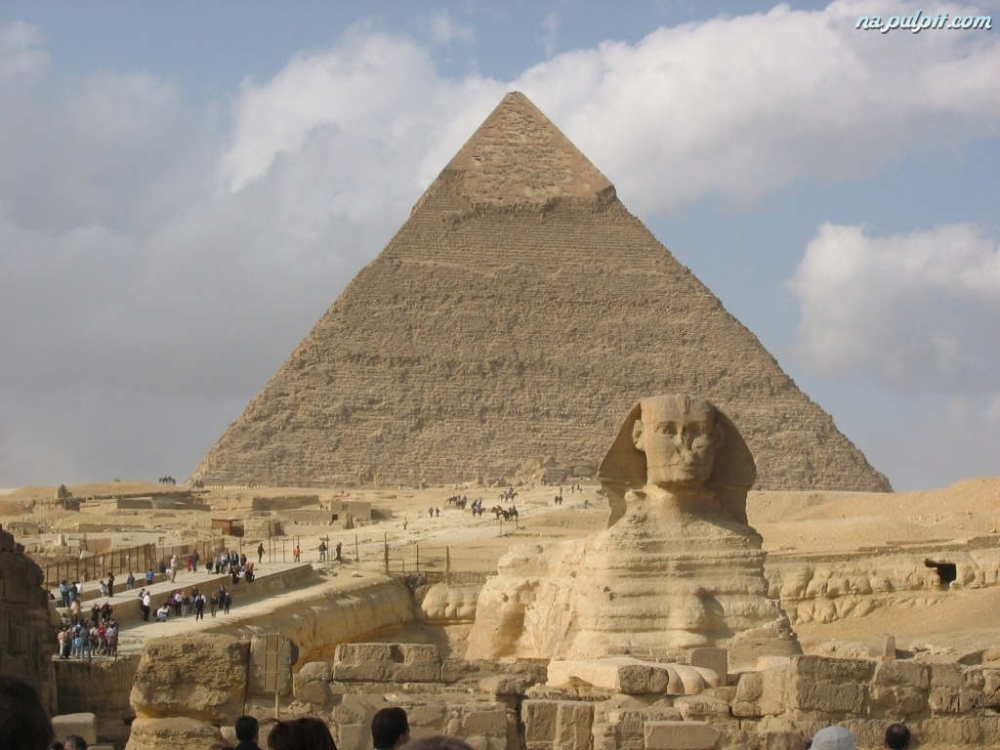

Starożytne cywilizacje
O mnie

Egipcjanie
- niezwykle inteligentni błyskotliwi i waleczni. Znawcy medycyny , matematyki i astronomii. Piramidy to tylko niektóre z ich wspaniałych budowli.
Wejdź i poznaj ich niezwykłe umiejętności.
Sumerowie
- potężna cywilizacja która pojawiła się znikąd . Jak to możliwe że w tak krótkim czasie rozwinęła tak wielkie umiejętności. Dowiedz się co potrafili sumerowie.
Aztekowie
- Nie znali koła , lecz wznosili potężne budowle w kształcie piramid. Malowali wizerunki astronautów na skale , znali się na astronomii i matematyce . To zaiste zadziwiający lud.
Chińczycy
- wielcy odkrywcy , konstruktorzy , astronomowie , inżynierowie i myśliciele. Dokonali wielu wspaniałych odkryć od papieru poprzez zegar do prochu strzelniczego i banknotów.
Designed by Freepik